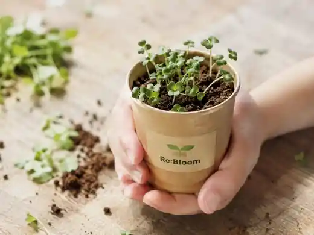

綱引き
泥の中で踏ん張り、チームで力を合わせます。
泥だらけで、能登を咲かせる。2026.9.20 / SUZU
使われなくなった土地を、みんなが集まり、笑い合える場所へ。石川県珠洲市若山町洲巻の田んぼで、子どもから大人まで泥の中で思いっきり体を動かす一日です。
 開催イメージ
開催イメージこの場所でやりますPLACE
実際の会場は珠洲市若山町洲巻の農地です。会場を事前に確認し、危険物や足元、水の状態などを確認したうえで当日を迎えます。


競技内容PROGRAM
チラシで公開している競技内容です。当日の田んぼの状態や天候、安全面の確認によって内容を変更する場合があります。
泥の中で踏ん張り、チームで力を合わせます。
泥の中を走って次の人へつなぐチーム競技です。
棒を持ってチームで進み、息を合わせてコースを回ります。
バケツを使い、チームで協力しながらつないでいきます。
年齢を問わず一緒に楽しみやすい競技です。
運動後の水分補給に活用します。暑さ対策のため、ご自身でも飲み物をご準備ください。
当日の流れDAY FLOW
休憩をはさみながら、田んぼの状態と参加者の体調を見て進めます。
参加確認、緊急連絡先などを確認します。
安全説明と当日の流れを共有します。
泥を使った競技を休憩をはさみながら行います。
参加者同士で交流する時間を予定しています。
16:30頃閉会、着替え等を含め17:00頃終了予定です。
安全についてSAFETY
安全対策を「買う物の多さ」ではなく、会場確認、参加ルール、スタッフ配置、休憩・中止判断などの運営で組み立てています。
幼稚園以下は保護者同伴。中学生未満は保護者による申込みと当日受付をお願いします。小学生は受付後、子どものみで競技に参加できます。
石・ガラス・金属などの危険物、深い泥や段差、水の状態を事前に確認します。
休憩と水分補給を行い、暑さ、雷、大雨などの状況に応じて競技の変更・中止を判断します。
体調不良やけががあった場合は競技を止め、必要に応じて119番通報や保護者への連絡を行います。イベント保険も準備を進めています。
イベントのあともつながる体験RE:BLOOM CUP
泥と培養土にレンゲの種をまき、小さなカップとして持ち帰る企画です。自宅で育てながら、イベントのあとも能登とのつながりが続く体験にします。

イメージFAQBEFORE JOINING
無料です。 参加フォームからお申し込みください。
競技参加者は50名を目標にしています。運営スタッフや保護者・見学の方を含め、全体で約70名が関わる想定です。
幼稚園以下は保護者同伴で参加できます。中学生未満は保護者による申込み・受付をお願いします。
泥で汚れてもよい服装でお越しください。詳細な持ち物は申込者向けに案内します。
参加費は無料です。子どもも大人も、思いきり泥だらけになれる一日を一緒につくります。